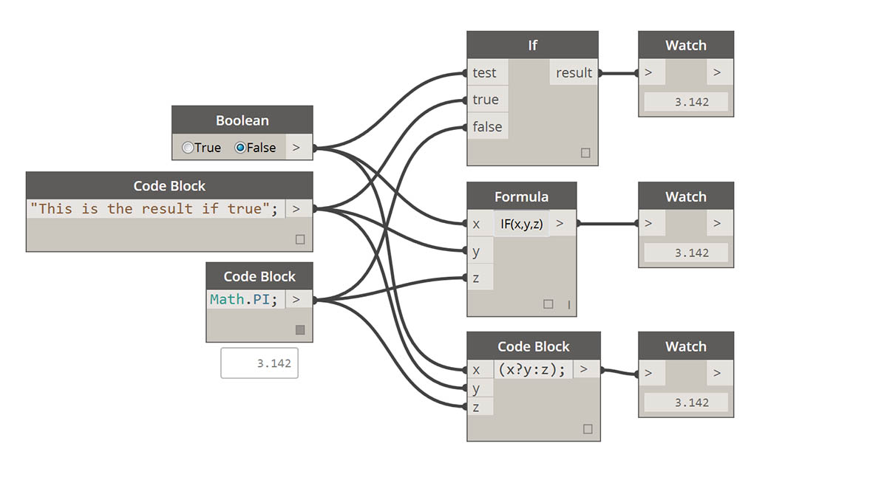
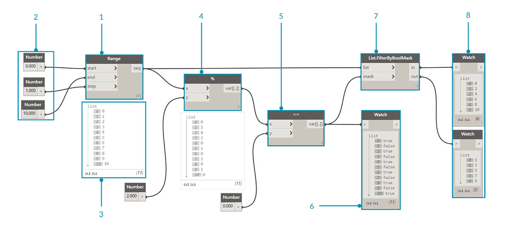
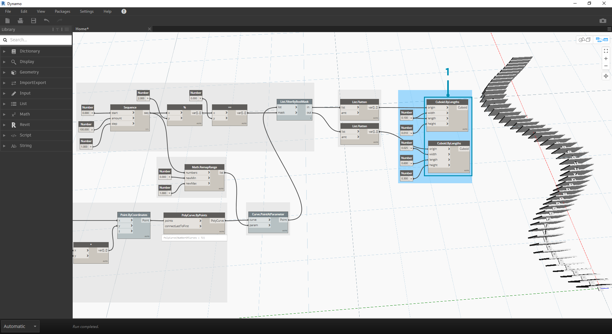

Logic
Logic, or more specifically, Conditional Logic, allows us to specify an action or set of actions based on a test. After evaluating the test, we will have a Boolean value representing True or False that we can use to control the Program Flow.
Booleans
Numeric variables can store a whole range of different numbers. Boolean variables can only store two values referred to as True or False, Yes or No, 1 or 0. We rarely use booleans to perform calculations because of their limited range.
Conditional Statements
The "If" statement is a key concept in programming: "If this is true, then that happens, otherwise something else happens. The resulting action of the statement is driven by a boolean value. There are multiple ways to define an "If" statement in Dynamo:
| Icon | Name | Syntax | Inputs | Outputs |
|---|---|---|---|---|
| If | If | test, true, false | result | |
| Formula | IF(x,y,z) | x, y, z | result | |
| Code Block | (x?y:z) | x, y, z | result |
Let's go over a brief example on each of these three nodes in action using the conditional "If" statement:

In this image, the boolean is set to true, which means that the result is a string reading: "this is the result if true". The three Nodes creating the If statement are working identically here.

Again, the Nodes are working identically. If the boolean is changed to false, our result is the number Pi, as defined in the original If statement.
Filtering a List
Download the example file that accompanies this exercise (Right click and "Save Link As..."): Building Blocks of Programs - Logic.dyn. A full list of example files can be found in the Appendix.
Let's use logic to separate a list of numbers into a list of even numbers and a list of odd numbers.

- Number Range - add a number range to the canvas.
- Numbers - add three number nodes to the canvas. The value for each number node should be: 0.0 for start, 10.0 for end, and 1.0 for step.
- Output - our output is a list of 11 numbers ranging from 0-10.
- Modulo (%)- Number Range into x and 2.0 into y. This calculates the remainder for each number in the list divided by 2. The output from this list gives us a list of values alternating between 0 and 1.
- Equality Test (==) - add an equality test to the canvas. Plug modulo output into the x input and 0.0 into the y input.
- Watch - The output of the equality test is a list of values alternating between true and false. These are the values used to separate the items in the list. 0 (or true) represents even numbers and (1, or false) represents odd numbers.
- List.FilterByBoolMask - this Node will filter the values into two different lists based on the input boolean. Plug the original number range into the list input and the equality test output into the mask input. The in output represents true values while the out output represents false values.
- Watch - as a result, we now have a list of even numbers and a list of odd numbers. We've used logical operators to separate lists into patterns!
From Logic to Geometry
Building off of the logic established in the first exercise, let's apply this setup into a modeling operation.
 We'll jump off from the previous exercise with the same Nodes. The only exceptions (in addition to changing the format are):
We'll jump off from the previous exercise with the same Nodes. The only exceptions (in addition to changing the format are):
- The input values have changed.
- We've unplugged the in list input into List.FilterByBoolMask. We'll put these Nodes aside for now, but they'll come in handy later in the exercise.

Let's begin by connecting the Nodes together as shown in the image above. This group of Nodes represents a parametric equation to define a line curve. A few notes:
- The first slider should have a min of 1, a max of 4, and a step of 0.01.
- The second slider should have a min of 0, a max of 1, and a step of 0.01.
- PolyCurve.ByPoints - if the above Node diagram is copied, the result is a sine curve in the Dynamo Preview viewport.
The method here for the inputs: use number nodes for more static properties and number sliders on the more flexible ones. We want to keep the original number range that we're defining in the beginning of this step. However, the sine curve that we create here should have some flexibility. We can move these sliders to watch the curve update its frequency and amplitude.

We're going to jump around a bit in the definition, so let's look at the end result so that we can reference what we're getting at. The first two steps are made separately, we now want to connect the two. We'll use the base sine curve to drive the location of the zipper components, and we'll use the true/false logic to alternate between little boxes and larger boxes.

- Math.RemapRange - Using the number sequence created in step 01, let's create a new series of numbers by remapping the range. The original numbers from step 01 range from 0-100. These numbers range from 0 to 1 by the newMin and newMax inputs respectively.

- Curve.PointAtParameter - Plug Polycurve.ByPoints (from step 2) into curve and Math.RemapRange into param. This step creates points along the curve. We remapped the numbers to 0 to 1 because the input of param is looking for values in this range. A value of 0 represents the start point, a value of 1 represents the end points. All numbers in between evaluate within the [0,1] range.

- List.FilterByBoolMask - Plug Curve.PointAtParameter from the previous step into the list input.
- Watch - a watch node for in and a watch node for out shows that we have two lists representing even indices and odd indices. These points are ordered in the same way on the curve, which we demonstrate in the next step.

- Cuboid.ByLengths - recreate the connections seen in the image above to get a zipper along the sine curve. A cuboid is just a box here, and we're defining its size based on the curve point in the center of the box. The logic of the even/odd divide should now be clear in the model.

- Number Slider - stepping back to the beginning of the definition, we can flex the number slider and watch the zipper update. The top row of images represents a range values for the top number slider. This is the frequency of the wave.
- Number Slider - the bottom row of images represents a range of values for the bottom slider. This is the amplitude of the wave.